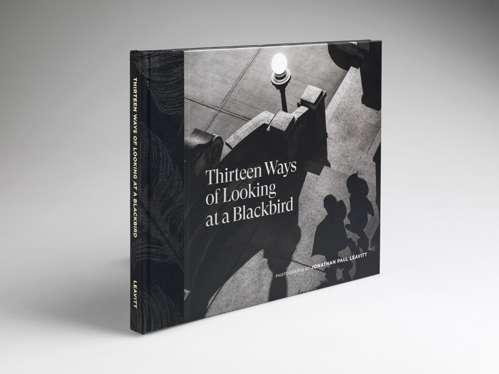

About the Artist
Jonathan Leavitt’s photographic journey began at the age of twelve, sparked by early hands-on experience with a 4×5 Graphex camera under the informal tutelage of his father.
While the origins of his father’s expertise remain a mystery, Leavitt absorbed foundational lessons that would shape his lifelong commitment to the medium. Deeply inspired by masters like Cartier-Bresson, Edward Steichen, Alfred Stieglitz, and Ansel Adams, Jonathan expanded his artistic vision through studies in painting, drawing, printmaking, and architecture, although he never pursued formal photographic education. His approach to photography is deeply intuitive and self-reflective, guided by continual exploration and critique from fellow photographers. Based in Brookline, Massachusetts, he travels widely, seeking moments that transcend everyday life into poetic visual meditations.
Artist Statement for the Latest Book Release
My photography, in fact my whole attitude towards thoughtful life, begins with the idea that daily experiences are cliché, and we need to transcend them, to look for something beyond, to dig deeper, whatever that might be, and wherever we can find it. Wallace Stevens felt the same way, and he said so, though I never met him, for he died the year I was born. These images represent my response to his remarkable poem. They are extensions of the poem, all drawn from everyday life. With only a few exceptions, they are all unposed and taken unaware.
In a purely visual sense, the most basic elements of all black-and-white photography are the blackness and whiteness of the images themselves, and these photographs also embody the inky blackness of our little hero, the blackbird, though he never appears in the book except for a cameo portrait in the credits. He deserves all the credit we can give him!
I invite the viewers to share in my vision of the world and these haiku-like stanzas, and come away with a new and expanded appreciation of the visual world.
Featured Blog Posts
Explore my thoughts on photography, equipment, and artistic vision through these selected articles:
35mmc • August 12, 2025
A deep dive into the unique character and magical qualities of the MS-Optics 50mm F1.0 ISM lens, exploring how unconventional design choices can create extraordinary photographic results.
35mmc • January 1, 2025
An exploration of primitive lens design and the artistic possibilities that emerge from embracing optical imperfections and limitations.

35mmc • October 2, 2024
The story behind my photographic interpretation of Wallace Stevens' poetry, exploring the intersection of literature and visual art.
Brilliant Editions • September 2023
An in-depth conversation about the creative process behind the book, the inspiration from Wallace Stevens' poetry, and the photographic journey that brought this project to life.
Find more photos and artist updates on Instagram.
For a complete CV and exhibition history, please get in touch via the contact page.